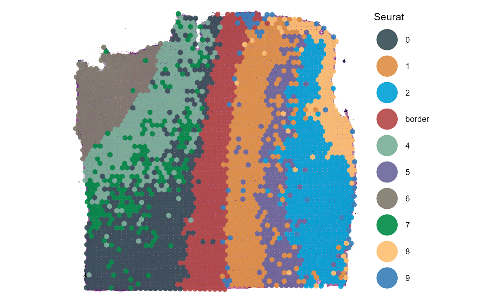

Genes-, Gene-sets & Features
spata-v2-genes-gene-sets-and-features.Rmd2. Introduction
Genes and gene-sets are of major importance in transcriptomic studies. The average count-matrix contains information of these expression levels for more than 20.000 genes. While referring to a few of them by entering their names manually might be tolerable things can get cumbersome rapidly once the number of genes of interest becomes double- or triple digit. Still, the majority of functions in SPATA2 needs information about the genes, gene-sets and features of interest in form of character vectors. The following tutorial introduces important helper functions that make living easier when it comes to working with genes, gene-sets and features - also referred to as variables.
# load packages
library(SPATA2)
library(SPATAData)
library(tidyverse)
# load object
object_t269 <- downloadSpataObject(sample_name = "269_T")
# add cluster data
data("Seurat_clustering")
object_t269 <-
addFeatures(
object = object_t269,
feature_df = Seurat_clustering[["269_T"]],
overwrite = TRUE
)3. Genes and gene-sets
3.1 Setting up a gene-set data.frame
The term gene-set refers to a collection of several genes that are
known to interact with each other or being co-expressed together under
certain conditions. Information about the gene-sets defined in your
spata-object is stored in the slot @used_genesets which
contains a data.frame of two character-variables.
- ont: The name of the gene-sets.
- gene: The belonging genes.
## ont gene
## 1 BC_RELA_PATHWAY IKBKG
## 2 BC_RELA_PATHWAY NFKBIA
## 3 BC_RELA_PATHWAY FADD
## 4 BC_RELA_PATHWAY CHUK
## 5 BC_RELA_PATHWAY TNF
## 6 BC_RELA_PATHWAY TNFRSF1B
## 7 BC_RELA_PATHWAY TNFRSF1A
## 8 BC_RELA_PATHWAY TRAF6
## 9 BC_RELA_PATHWAY CREBBP
## 10 BC_RELA_PATHWAY TRADD
## 11 BC_RELA_PATHWAY RELA
## 12 BC_RELA_PATHWAY EP300
## 13 BC_RELA_PATHWAY RIPK1
## 14 BC_RELA_PATHWAY IKBKB
## 15 BC_RELA_PATHWAY NFKB1
## 16 BC_NO1_PATHWAY ACTA1
## 17 BC_NO1_PATHWAY SLC7A1
## 18 BC_NO1_PATHWAY VEGFA
## 19 BC_NO1_PATHWAY CAV1
## 20 BC_NO1_PATHWAY KNG1In SPATA2 gene-set names are functionally divided
into their class and their actual name. The class is determined by the
character string that comes before the first *_*, the name refers to the
rest. Subsequent chapters will highlight why this functional separation
is useful as well as why it is useful to really think about the way you
name your personally defined gene-sets. In order to obtain an overview
of your saved gene-sets run printGeneSetOverview().
printGeneSetOverview(object_t269)## Class Available Gene Sets
## 1 BC 289
## 2 BP.GO 7269
## 3 CC.GO 972
## 4 Cell.types 3
## 5 HM 50
## 6 MF.GO 1581
## 7 RCTM 1493By default any initiateSpataObject_*()-function assigns
a gene-set data.frame to your spata-object containing a variety of
predefined gene-sets from the Molecular Signature
Database. Run data(gsdf) to load and ?gsdf
to get information about it and what the class-names stand for. If you
want to add new ones you can do that via addGeneSet().
# add a new gene-set of three genes
object_t269 <-
addGeneSet(
object = object_t269,
class_name = "New",
gs_name = "example_1",
genes = c('SLC35E2A', 'NADK', 'GFAP')
) # genes that exist in your expression matrix
printGeneSetOverview(object_t269)## Class Available Gene Sets
## 1 BC 289
## 2 BP.GO 7269
## 3 CC.GO 972
## 4 Cell.types 3
## 5 HM 50
## 6 MF.GO 1581
## 7 New 1
## 8 RCTM 1493A more convenient way would be to open an interactive application via
addGeneSetsInteracive() as displayed below. Make sure to
close the application via the respective button and to store the
resulting object in the same object in order to overwrite it and not to
overcrowd your global environment with spata-objects that only differ in
a few gene-sets.
object_t269 <- addGeneSetsInteractive(object_t269)
Fig.1 Interface of addGeneSetsInteractive()
The gene-set data.frame is infinitely expandable. If you want to
discard gene-sets or alter them you can either use
addGeneSet() with argument overwrite set to
TRUE in order to overwrite existing ones or
discardGeneSets() as shown below.
# discard gene-sets by name
object_t269 <- discardGeneSets(object = object_t269, gs_names = c("New_example_2"))
# display updated overview
printGeneSetOverview(object_t269)## Class Available Gene Sets
## 1 BC 289
## 2 BP.GO 7269
## 3 CC.GO 972
## 4 Cell.types 3
## 5 HM 50
## 6 MF.GO 1581
## 7 New 1
## 8 RCTM 1493In order to save the gene-set data.frame of one particular
spata-object for further use with other spata-objects use
saveGeneSetDf() which saves the @used_genesets
slot of the specified object as a .RDS-file.
saveGeneSetDf(object = object_t269, directory = "data/gene-set-df.RDS") If you want to set your gene-set data.frame manually use
setGeneSetDf().
3.2 Adjusting a gene-set data.frame
Given the nature of your sample it will happen that your expression
matrix does not contain genes (0 reads across all barcode-spots)
although they appear in certain gene-sets.
joinWithGeneSets() which works under the hood of a variety
of functions does not allow for gene-sets to join your data if less than
25% of the genes needed to form that gene-set are found. If this
threshold is to loose to you you can use adjustGeneSetDf()
to set the limit yourself. It will then discard all gene-sets whose
belonging genes are found to a percentage lower than the threshold you
set. (Discarding gene-sets from your gene-set data.frame effectively
makes it impossible to work with them within
SPATA2.)
3.3 Referring to genes and gene-sets
getGenes() and getGeneSets() return
character vectors which are valid inputs for all
SPATA2-functions in which one has to refer to genes or
gene-sets in any way.
3.3.1 Obtaining gene-set names
As we have seen above gene-sets are a set of genes that are
functionally gathered under a certain name. getGeneSets()
does not return the genes of certain gene-sets
but the gene-set-names as strings It does that either
as a single character vector or as a named list.
# to get all gene-set names set 'of_class' to 'all'
all_gs <- getGeneSets(object = object_t269, of_class = "all")
length(all_gs)## [1] 11658
head(all_gs, 10)## [1] "BC_RELA_PATHWAY" "BC_NO1_PATHWAY"
## [3] "BC_CSK_PATHWAY" "BC_SRCTMRPTP_PATHWAY"
## [5] "BC_AMI_PATHWAY" "BC_GRANULOCYTES_PATHWAY"
## [7] "BC_LYM_PATHWAY" "BC_ARAP_PATHWAY"
## [9] "BC_AGR_PATHWAY" "BC_AKAP95_PATHWAY"
# get gene-set names of certain classes
getGeneSets(
object = object_t269,
of_class = c("HM", "New"),
simplify = TRUE # as a single vector
) %>% tail() # show last six ## [1] "HM_ALLOGRAFT_REJECTION" "HM_SPERMATOGENESIS" "HM_KRAS_SIGNALING_UP"
## [4] "HM_KRAS_SIGNALING_DN" "HM_PANCREAS_BETA_CELLS" "New_example_1"
# get gene-set names of certain classes
getGeneSets(
object = object_t269,
of_class = c("HM", "New"),
simplify = FALSE # as a named list
) %>% map(.f = head) #show first six## $HM
## [1] "HM_TNFA_SIGNALING_VIA_NFKB" "HM_HYPOXIA"
## [3] "HM_CHOLESTEROL_HOMEOSTASIS" "HM_MITOTIC_SPINDLE"
## [5] "HM_WNT_BETA_CATENIN_SIGNALING" "HM_TGF_BETA_SIGNALING"
##
## $New
## [1] "New_example_1"To subset your gene-sets of interest additionally make use of the
argument index which takes a character string as a regular
expression and filters the gene-sets to be returned again according to
it.
# get all gene-sets of class HALLMARK referring to something specific
getGeneSets(
object = object_t269,
of_class = "HM",
index = "ESTROGEN|ANDROGEN"
)## [1] "HM_ESTROGEN_RESPONSE_EARLY" "HM_ESTROGEN_RESPONSE_LATE"
## [3] "HM_ANDROGEN_RESPONSE"If you want to skim your gene-sets interactively use
getGeneSetsInteractive() which opens an application in your
R-Studio’s viewer pane and returns a vector of chosen gene-sets.
3.3.2 Obtaining gene names
Eventually expression matrices contain information about gene
expression levels and not gene-set expression levels. If you are looking
for genes of certain gene-sets getGenes() provides an easy
we to do just that.
# getGenes() without any further specification will return all genes found
# in your expression matrix ...
all_genes <- getGenes(object_t269)
# ... which can be quite a lot
length(all_genes)## [1] 17989
# with regards to gene-sets it makes more sense to break genes down by
# their gene-set belonging
estrogen_gs <-
getGeneSets(
object_t269,
of_class = "HM",
index = "ESTROGEN"
)
estrogen_genes <-
getGenes(
object = object_t269,
of_gene_sets = estrogen_gs,
simplify = FALSE
) # to return them sorted in a list
#hint: "..." was added manually for visualization purpose as these gene-sets contain
# more than 150 genes ## $HM_ESTROGEN_RESPONSE_EARLY
## [1] "GREB1" "CA12" "SLC9A3R1" "MYB" "IGFBP4" "SYBU"
## [7] "NPY1R" "PDZK1" "NRIP1" "MLPH" "HSPB8" "EGR3"
## [13] "LRIG1" "KDM4B" "RHOBTB3" "TPD52L1" "ELOVL2" "RET"
## [19] "TPBG" "MAPT" "..."
##
## $HM_ESTROGEN_RESPONSE_LATE
## [1] "SLC9A3R1" "TPD52L1" "PRSS23" "CA12" "PDZK1" "CELSR2"
## [7] "RET" "MYB" "TPBG" "EGR3" "ARL3" "OLFM1"
## [13] "NPY1R" "XBP1" "AREG" "IL17RB" "NRIP1" "ASS1"
## [19] "TFF3" "FKBP4" "..."If you want to work with genes manually and skim them interactively
use getGenesInteractive() which opens an application in
your R-Studio’s viewer pane.
4. Features
In SPATA2 features refer to all kinds of information
of barcode-spots that do not fall explicitly under gene- or gene-set
expression. This includes in particular group belonging such as
clustering or spatial segmentation. But additional numeric features such
as monocle3-pseudotime or everything else that has been computed is
considered to be a feature as well. Feature information is stored in the
slot @fdata.
4.1 Obtain feature data
To obtain all feature information use
getFeatureDf().
getFeatureDf(object = object_t269)## # A tibble: 3,213 x 6
## barcodes sample nCount_Spatial nFeature_Spatial seurat_clusters histology
## <chr> <chr> <dbl> <int> <fct> <fct>
## 1 AAACAAGTATC~ 269_T 2984 1760 2 infiltra~
## 2 AAACACCAATA~ 269_T 14812 5452 0 tumor
## 3 AAACAGAGCGA~ 269_T 2393 1516 5 infiltra~
## 4 AAACATTTCCC~ 269_T 4870 2575 5 infiltra~
## 5 AAACCCGAACG~ 269_T 5731 2781 2 infiltra~
## 6 AAACCGGGTAG~ 269_T 19525 6066 7 tumor
## 7 AAACCGTTCGT~ 269_T 11463 4523 0 tumor
## 8 AAACCTAAGCA~ 269_T 9221 3966 1 infiltra~
## 9 AAACCTCATGA~ 269_T 12689 4782 7 tumor
## 10 AAACGAGACGG~ 269_T 1168 889 1 infiltra~
## # i 3,203 more rows4.2 Obtain feature names, variables and values
In order to specify features of interest as input in functions you
need to specify the name that particular feature variable carries.
Several functions only work with feature data of one kind - either
numeric features or categorical features. The function
getFeatureNames() provides you with information about all
currently available features in your spata-object as well as about the
class they belong to.
# get all feature names
getFeatureNames(object = object_t269)## numeric integer factor factor
## "nCount_Spatial" "nFeature_Spatial" "seurat_clusters" "histology"
# get only names of numeric features
numeric_features <-
getFeatureNames(object = object_t269, of_class = c("numeric"))
# output
numeric_features## numeric
## "nCount_Spatial"
# get only names of features that contain grouping information
grouping_variables <-
getFeatureNames(object = object_t269, of_class = c("factor"))
# output
grouping_variables## factor factor
## "seurat_clusters" "histology"Additionally getFeatureValues() allows to quickly access
the unique values of discrete feature variables such as clusters.
getFeatureValues(object = object_t269, features = grouping_variables)## $seurat_clusters
## [1] 2 0 5 7 1 3 4 6 8 9
## Levels: 0 1 2 3 4 5 6 7 8 9
##
## $histology
## [1] infiltrated tumor transition
## Levels: tumor transition infiltratedWhen it comes to grouping variables such as clusters a more intuitive
approach is offered by the two functions
getGroupingOptions() and getGroupNames().
# obtain all variables that group the sample's barcode-spots in a certain way
getGroupingOptions(object = object_t269)## factor factor
## "seurat_clusters" "histology"
# obtain the names of the groups a certain grouping variable contains
getGroupNames(object = object_t269, grouping_variable = "seurat_clusters")## [1] "0" "1" "2" "3" "4" "5" "6" "7" "8" "9"4.3 Alter features
4.4.1 Change feature names
If you want to change the name of a feature variable you can do so
with renameFeatures().
# old feature names
getFeatureNames(object = object_t269)## numeric integer factor factor
## "nCount_Spatial" "nFeature_Spatial" "seurat_clusters" "histology"
# change some names
object_t269 <-
renameFeatures(
object = object_t269,
"Seurat" = "seurat_clusters",
"nCount" = "nCount_Spatial"
)
# new feature names
getFeatureNames(object = object_t269)## numeric integer factor factor
## "nCount" "nFeature_Spatial" "Seurat" "histology"4.4.2 Change feature values (group names)
Referring to clusters/groups with numbers is often sub optimal. Once
your differential gene expression analysis has given you insight in what
constitutes certain groups of barcode-spots you might want to give it a
more informative name. You can do so with renameGroups().
In the tutorial on gene set enrichment
analysis we used sample 269_T, too, and saw that cluster
5 was highly enriched for hypoxia associated signatures.
# old group names
getGroupNames(
object = object_t269,
grouping_variable = "Seurat" # was renamed above to Seurat
)## [1] "0" "1" "2" "3" "4" "5" "6" "7" "8" "9"
# rename cluster
object_t269 <-
renameGroups(
object = object_t269,
grouping_variable = "Seurat",
"border" = "3"
)
getGroupNames(object = object_t269, grouping_variable = "Seurat")## [1] "0" "1" "2" "border" "4" "5" "6" "7"
## [9] "8" "9"
plotSurface(object_t269, color_by = "Seurat", pt_clrp = "jama") Whenever a warning message appears telling you that a certain gene, gene-set or feature was not found this means that the character string provided was not found throughout your spata-object. Check for typos in this case. The same is true for gene-set names with regards to the ont-variable in the gene-set data.frame.
5. Example
The output vectors of getGenes(),
getGeneSets() and getFeatureNames() are a
perfectly valid inputs for arguments like color_by or
variables.
hallmark_gs <- getGeneSets(object = object_t269, of_class = "HM")
# output
hallmark_gs[1:10]## [1] "HM_TNFA_SIGNALING_VIA_NFKB" "HM_HYPOXIA"
## [3] "HM_CHOLESTEROL_HOMEOSTASIS" "HM_MITOTIC_SPINDLE"
## [5] "HM_WNT_BETA_CATENIN_SIGNALING" "HM_TGF_BETA_SIGNALING"
## [7] "HM_IL6_JAK_STAT3_SIGNALING" "HM_DNA_REPAIR"
## [9] "HM_G2M_CHECKPOINT" "HM_APOPTOSIS"
# create a spata-data.frame
joined_df <-
joinWith(
object = object_t269,
spata_df = getCoordsDf(object_t269),
gene_sets = hallmark_gs,
features = "Seurat"
)
#output
head(joined_df, 20)## # A tibble: 20 x 55
## barcodes sample x y Seurat HM_TNFA_SIGNALING_VI~1 HM_HYPOXIA
## <chr> <chr> <dbl> <dbl> <fct> <dbl> <dbl>
## 1 AAACAAGTATCTCCCA~ 269_T 1450. 731. 2 0.369 0.335
## 2 AAACACCAATAACTGC~ 269_T 411. 547. 0 0.290 0.342
## 3 AAACAGAGCGACTCCT~ 269_T 1359. 1516 5 0.239 0.229
## 4 AAACATTTCCCGGATT~ 269_T 1386. 493. 5 0.518 0.542
## 5 AAACCCGAACGAAATC~ 269_T 1614. 838. 2 0.585 0.642
## 6 AAACCGGGTAGGTACC~ 269_T 527. 916. 7 0.362 0.399
## 7 AAACCGTTCGTCCAGG~ 269_T 700. 696 0 0.328 0.347
## 8 AAACCTAAGCAGCCGG~ 269_T 1210. 408. 1 0.586 0.553
## 9 AAACCTCATGAAGTTG~ 269_T 416. 1026. 7 0.288 0.427
## 10 AAACGAGACGGTTGAT~ 269_T 1167. 1061. 1 0.177 0.131
## 11 AAACGGGCGTACGGGT~ 269_T 1310. 406. 5 0.393 0.338
## 12 AAACGGTTGCGAACTG~ 269_T 909. 367. border 0.208 0.285
## 13 AAACTCGGTTCGCAAT~ 269_T 1047. 388. border 0.146 0.213
## 14 AAACTCGTGATATAAG~ 269_T 1594. 1318. 2 0.268 0.177
## 15 AAACTGCTGGCTCCAA~ 269_T 1014. 845. border 0.148 0.122
## 16 AAACTTGCAAACGTAT~ 269_T 414. 851. 4 0.144 0.314
## 17 AAAGACCCAAGTCGCG~ 269_T 785. 1609. 0 0.445 0.683
## 18 AAAGACTGGGCGCTTT~ 269_T 368. 1200 6 0.632 0.476
## 19 AAAGGCCCTATAATAC~ 269_T 447. 394 0 0.418 0.373
## 20 AAAGGCTACGGACCAT~ 269_T 848. 477. 0 0.239 0.292
## # i abbreviated name: 1: HM_TNFA_SIGNALING_VIA_NFKB
## # i 48 more variables: HM_CHOLESTEROL_HOMEOSTASIS <dbl>,
## # HM_MITOTIC_SPINDLE <dbl>, HM_WNT_BETA_CATENIN_SIGNALING <dbl>,
## # HM_TGF_BETA_SIGNALING <dbl>, HM_IL6_JAK_STAT3_SIGNALING <dbl>,
## # HM_DNA_REPAIR <dbl>, HM_G2M_CHECKPOINT <dbl>, HM_APOPTOSIS <dbl>,
## # HM_NOTCH_SIGNALING <dbl>, HM_ADIPOGENESIS <dbl>,
## # HM_ESTROGEN_RESPONSE_EARLY <dbl>, HM_ESTROGEN_RESPONSE_LATE <dbl>, ...